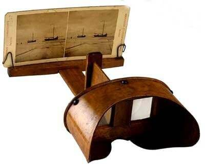
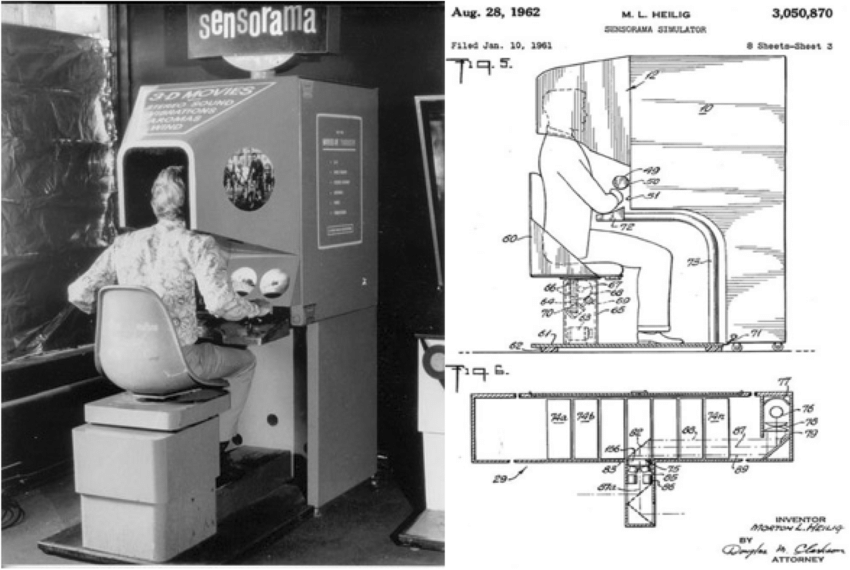
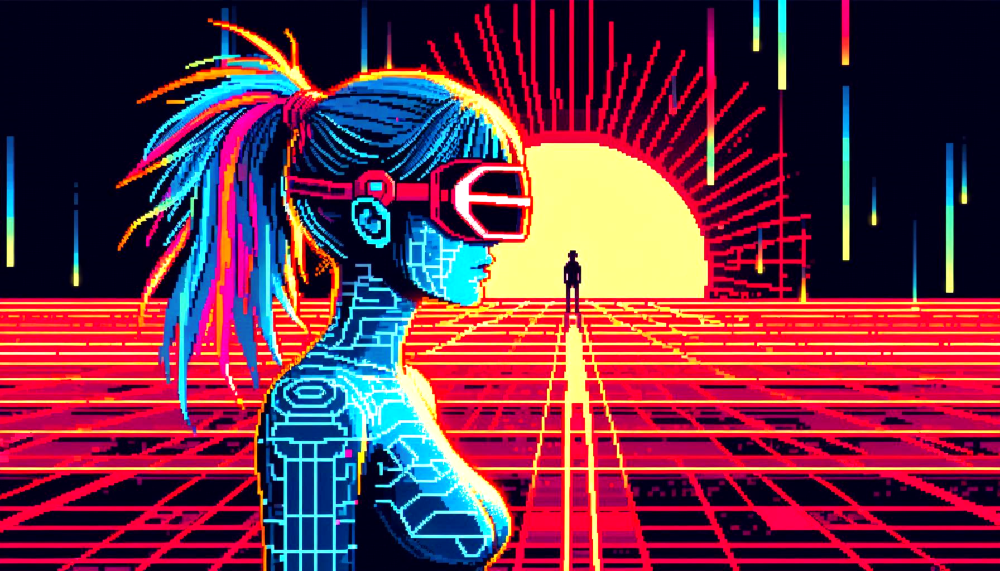

The World of VR
is an Exciting Place
The story behind Vr's current place in the world is long and
engaging with plenty of twists and turns. We've briefly
summerized key points to help you gain a greater
insite into VR culture and how any company could
benefit from becoming more involved in this
rapidly evolving tech of the future
|  |
VR might seem like something that is only possible because of the technology we have access to today, however technical developments and ideas of virtual reality go as far back as 1838. When Sir Charles Wheatstone became the first person to describe stereopsis, the ability to perceive depth and see in three dimensions. He also did research into binocular vision, which stated that to create 3-D images the brain combines two photographs (With one eye viewing each) of the same object from different points, which makes the image appear to have depth and immersion. His research led him to create the stereoscope, a device that used a pair of mirrors set 45 degrees to the user’s eyes to reflect a picture located off to the side. |
The first depiction of VR was in 1935, when science fiction writer Stanley Weinbaum presented a fictional model for virtual reality in his short story “Pygmalion's Spectacles”. In the story, “the main character meets a professor who invented a pair of goggles which enabled “a movie that gives one sight and sound […] taste, smell, and touch. […] You are in the story, you speak to the shadows (characters) and they reply […] the story is all about you, and you are in it.””
|
In 1956 cinematographer Morton Heilig created the first machine to use virtual reality, which he called the “Sensorama”. It had six short films developed for it and was able to fully immerse users in their experiences using technology like combined full color 3D videos, audio, vibrations, smell, and atmospheric effects. Heilig also created and patented the “Telesphere Mask”, which was the first head mounted display and provided users with stereoscopic 3D images and stereo sound, however motion tracking still hadn't been developed yet. The first VR headset with motion racking was created a year later in 1961 by Philco. The headset wasn’t made for people to use, it was instead made for the military so they could remotely look at hazardous situations using a remote camera to mimic head movements. Virtual reality further assisted the military when Thomas Furness created the first flight simulator for the Air Force in 1966, which assisted in the progression of VR because the military provided a lot of funding for better flight simulators. |
 |
|
VR might seem like something that is only possible because of the technology we have access to today, however technical developments and ideas of virtual reality go as far back as 1838. When Sir Charles Wheatstone became the first person to describe stereopsis, the ability to perceive depth and see in three dimensions. He also did research into binocular vision, which stated that to create 3-D images the brain combines two photographs (With one eye viewing each) of the same object from different points, which makes the image appear to have depth and immersion. His research led him to create the stereoscope, a device that used a pair of mirrors set 45 degrees to the user’s eyes to reflect a picture located off to the side. (USE PICTURE) |
 |
The first depiction of VR was in 1935, when science fiction writer Stanley Weinbaum presented a fictional model for virtual reality in his short story “Pygmalion's Spectacles”. In the story, “the main character meets a professor who invented a pair of goggles which enabled “a movie that gives one sight and sound […] taste, smell, and touch. […] You are in the story, you speak to the shadows (characters) and they reply […] the story is all about you, and you are in it.””
In 1956 cinematographer Morton Heilig created the first machine to use virtual reality, which he called the “Sensorama”. It had six short films developed for it and was able to fully immerse users in their experiences using technology like combined full color 3D videos, audio, vibrations, smell, and atmospheric effects. Heilig also created and patented the “Telesphere Mask”, which was the first head mounted display and provided users with stereoscopic 3D images and stereo sound, however motion tracking still hadn't been developed yet. The first VR headset with motion racking was created a year later in 1961 by Philco. The headset wasn’t made for people to use, it was instead made for the military so they could remotely look at hazardous situations using a remote camera to mimic head movements.